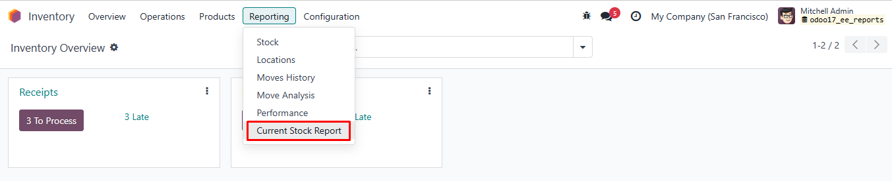
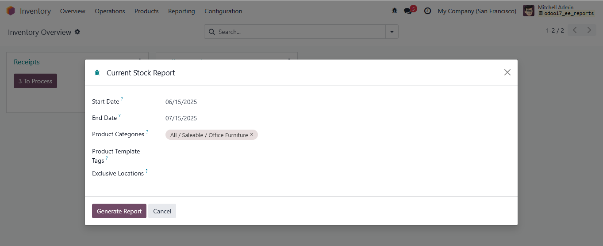
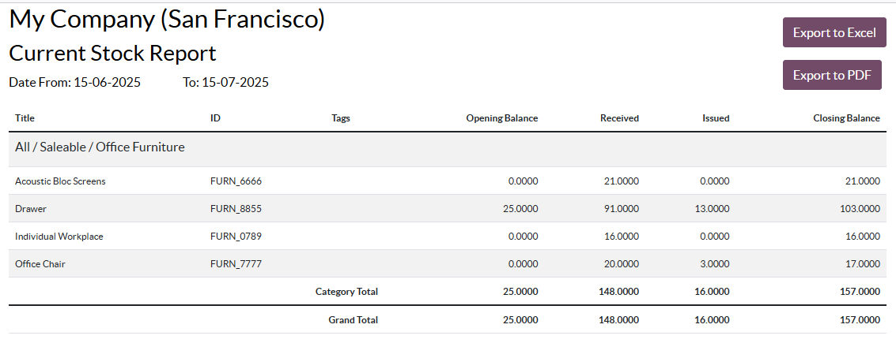
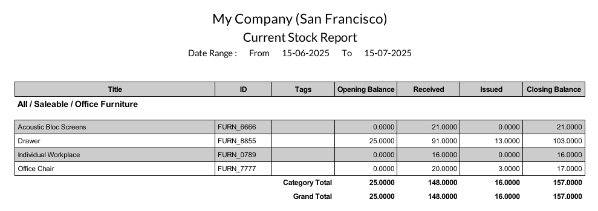
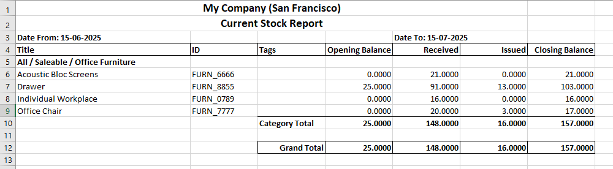

<section class="oe_container">
    <div class="oe_row oe_spaced">
        <h2 class="oe_slogan" style="color:#875A7B;">Current Stock Report</h2>
        <h3 class="oe_slogan">Current Stock Report of selected period of one year.</h3>
        <div class="oe_demo oe_picture oe_screenshot">
            <br>
            <h3 style="text-align: center">Current Stock Report</h3>
            <h5 style="text-align: center">Navigate to Current Stock Report under Reporting menu in Inventory.
                Report filter can be Product Categories, Product Template Tags and Exclusive Locations wise
            </h5>
            
        </div>
        <div class="oe_demo oe_picture oe_screenshot">
            <br>
            <h3 style="text-align: center">Wizard to get criteria</h3>
            <h5 style="text-align: center">Select Start and End date of Current Stock Report with Product Categories, Product Template Tags and Exclusive Locations as optional.</h5>
            
        </div>
        <div class="oe_demo oe_picture oe_screenshot">
            <br>
            <h3 style="text-align: center">HTML view of Current Stock Report</h3>
            <h5 style="text-align: center">A HTML view of Current Stock Report will open in new tab.</h5>
            
        </div>
        <br>
        <div class="oe_demo oe_picture oe_screenshot">
            <br>
            <h3 style="text-align: center">PDF view of Current Stock Report</h3>
            <h5 style="text-align: center">A PDF view of Current Stock Report will open on click Export to PDF button.</h5>
            
        </div>
        <div class="oe_demo oe_picture oe_screenshot">
            <br>
            <h3 style="text-align: center">Excel view of Current Stock Report</h3>
            <h5 style="text-align: center">An excel view of Current Stock Report will open on click Export to Excel button.</h5>
            
        </div>
    </div>
</section>